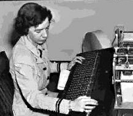

Early Life and Education

- Born in New York City on December 9th 1906
- She attended the Hartridge School in Plainfield, New Jersey
- She graduated Phi Beta Kappa from Vassar in 1928 with a bachelor's degree in mathematics and physics
- earned her master's degree at Yale University in 1930.
- In 1934, she earned a Ph.D. in mathematics from Yale. Her dissertation, New Types of Irreducibility Criteria, was published that same year
- Taught Mathmatics at Vassar in 1931
- promoted to associate professor in 1941
Career
World War II
In 1943, during World War II, Hopper obtained a leave of absence from Vassar and was sworn into the United States Navy Reserve, one of many women to volunteer to serve in the WAVES. trained at the Naval Reserve Midshipmen's School at Smith College in Northampton, Massachusetts. Hopper graduated first in her class in 1944, and was assigned to the Bureau of Ships Computation Project at Harvard University as a lieutenant, junior grade She served on the Mark I computer programming staff headed by Howard H. Aiken. Hopper remained at the Harvard Computation Lab until 1949, turning down a full professorship at Vassar in favor of working as a research fellow under a Navy contract at Harvard.
UNIVAC
In 1949, Hopper became an employee of the Eckert–Mauchly Computer Corporation as a senior mathematician and joined the team developing the UNIVAC I In the early 1950s, the company was taken over by the Remington Rand corporation, and it was while she was working for them that her original compiler work was done. In 1952 she had an operational compiler. "Nobody believed that," she said. "I had a running compiler and nobody would touch it. They told me computers could only do arithmetic. In 1954 Hopper was named the company's first director of automatic programming, and her department released some of the first compiler-based programming languages, including MATH-MATIC and FLOW-MATIC.
COBAL
In the spring of 1959, a two-day conference known as the Conference on Data Systems Languages (CODASYL) brought together computer experts from industry and government. Hopper served as a technical consultant to the committee, and many of her former employees served on the short-term committee that defined the new language COBOL (an acronym for COmmon Business-Oriented Language). The new language extended Hopper's FLOW-MATIC language with some ideas from the IBM equivalent, COMTRAN. Hopper's belief that programs should be written in a language that was close to English (rather than in machine code or in languages close to machine code, such as assembly languages) was captured in the new business language, and COBOL went on to be the most ubiquitous business language to date. From 1967 to 1977, Hopper served as the director of the Navy Programming Languages Group in the Navy's Office of Information Systems Planning and was promoted to the rank of Captain in 1973. She developed validation software for COBOL and its compiler as part of a COBOL standardization program for the entire Navy
Standards
In the 1970s, Hopper advocated for the Defense Department to replace large, centralized systems with networks of small, distributed computers. Any user on any computer node could access common databases located on the network. She developed the implementation of standards for testing computer systems and components, most significantly for early programming languages such as FORTRAN and COBOL. The Navy tests for conformance to these standards led to significant convergence among the programming language dialects of the major computer vendors. In the 1980s, these tests (and their official administration) were assumed by the National Bureau of Standards (NBS), known today as the National Institute of Standards and Technology
Retirement
Hopper retired from the Naval Reserve at age 60, in accordance with Navy attrition regulations, with the rank of Commander at the end of 1966.
She was recalled to active duty in August 1967 for a six-month period that turned into an indefinite assignment. She again retired in 1971, but was asked to return to active duty again in 1972. She was promoted to Captain in 1973 by Admiral Elmo R. Zumwalt, Jr.
After Republican Representative Philip Crane saw her on a March 1983 segment of 60 Minutes, he championed H.J.Res. 341, a joint resolution originating in the House of Representatives, which led to her promotion to Commodore (Admiral, O-7) by special Presidential appointment. She remained on active duty for several years beyond mandatory retirement by special approval of Congress.

In 1985, the rank of Commodore was renamed Rear Admiral (Lower Half). She retired (involuntarily) from the Navy on August 14, 1986. At a celebration held in Boston on the USS Constitution to celebrate her retirement, Hopper was awarded the Defense Distinguished Service Medal, the highest non-combat decoration awarded by the Department of Defense. At the time of her retirement, she was the oldest active-duty commissioned officer in the United States Navy (79 years, eight months and five days), and aboard the oldest commissioned ship in the United States Navy (188 years, nine months and 23 days). (Admirals William D. Leahy, Chester W. Nimitz, Hyman G. Rickover and Charles Stewart were the only other officers in the Navy's history to serve on active duty at a higher age. Leahy and Nimitz served on active duty for life due to their promotions to the rank of Fleet Admiral.)
She was then hired as a senior consultant to Digital Equipment Corporation, a position she retained until her death in 1992, aged 85. Her primary activity in this capacity was as a goodwill ambassador, lecturing widely on the early days of computers, her career, and on efforts that computer vendors could take to make life easier for their users. She visited a large fraction of Digital's engineering facilities, where she generally received a standing ovation at the conclusion of her remarks. Many people such as Admirals and Generals would ask her why satellite communication would take so long. So during many of her lectures, she illustrated a nanosecond using salvaged obsolete Bell System 25 pair telephone cable, cut it to 11.8 inch (30 cm) lengths, the distance that light travels in one nanosecond, and handed out the individual wires to her listeners.Awards and Recognition
| 1969: | Hopper was awarded the inaugural Computer Sciences Man of the Year award from the Data Processing Management Association. |
| 1971: | The annual Grace Murray Hopper Award for Outstanding Young Computer Professionals was established in 1971 by the Association for Computing Machinery. |
| 1973: | First American and the first woman of any nationality to be made a Distinguished Fellow of the British Computer Society. |
| 1982: | American Association of University Women Achievement Award and an Honorary Doctor of Science from Marquette University. |
| 1985: | Honorary Doctor of Letters from Western New England College (now Western New England University). |
| 1986: | Upon her retirement, she received the Defense Distinguished Service Medal. |
|---|---|
| 1987: | The first Computer History Museum Fellow Award Recipient "for contributions to the development of programming languages, for standardization efforts, and for lifelong naval service." |
| 1988: | Golden Gavel Award at the Toastmasters International convention in Washington, DC. |
| 1991: | National Medal of Technology. |
| 1996: | USS Hopper (DDG-70) was launched. Nicknamed Amazing Grace, it is on a very short list of U.S. military vessels named after women. |
| 2001: | Eavan Boland wrote a poem dedicated to Grace Hopper titled "Code" in her 2001 release Against Love Poetry. |
| 2001: | The Gracies, the Government Technology Leadership Award were named in her honor. |
| 2009: | The Department of Energy's National Energy Research Scientific Computing Center named its flagship system "Hopper". |
| 2009: | Office of Naval Intelligence creates the Grace Hopper Information Services Center. |
| 2013: | Google made the Google Doodle for Hopper's 107th birthday an animation of her sitting at a computer, using COBOL to print out her age. At the end of the animation, a moth flies out of the computer. |
Quotes
"The most important thing I've accomplished, other than building the compiler, is training young people. They come to me, you know, and say, 'Do you think we can do this?' I say, "Try it." And I back 'em up. They need that. I keep track of them as they get older and I stir 'em up at intervals so they don't forget to take chances."
“The glass is neither half empty nor half full. It’s simply larger than it needs to be.”
"There sat that beautiful big machine whose sole job was to copy things and do addition. Why not make the computer do it? That’s why I sat down and wrote the first compiler. It was very stupid. What I did was watch myself put together a program and make the computer do what I did."